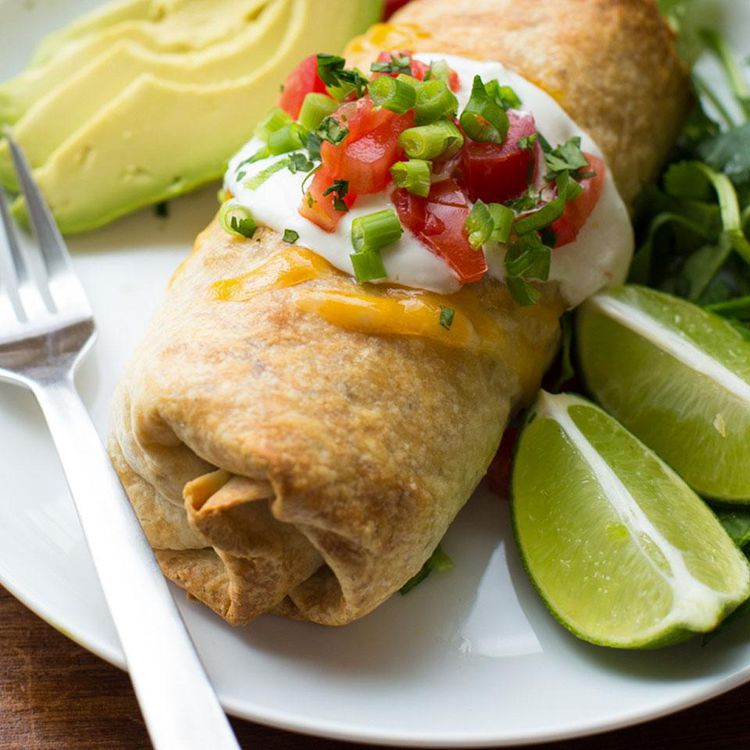

Chimichanga Recipe

Description
A Chimichanga is easy to make and tastes so delicious!
There are few ingredients needed and you can have dinner ready in a few minutes.
Chimichangas are a crispy burrito filled with beans and cheese and any meat if you so desire.
Ingredients
- Burrido size flour tortillas
- Refried beans
- Grated Chedder Cheese
- (optional) Meat of your choice
- Olive Oil
- Sour Cream
- Iceburg Lettuce
- Fresh tomatoes
- Your favorite hot sauce
Steps
- Lay tortilla flat
- Put refried beans on tortilla (keep toward center of tortilla)
- Put cheese on beans
- Roll tortilla (fold left and right, then top and bottom)
- Heat frying pan at medium heat with olive oil covering entire bottom of pan
- Carefully put burrido into oil in pan and let cook about 2 minutes on each side until golden brown
- (best to use tongs to place and remove burrido from pan)
- Let burrito cool on paper towel to absord left over oil
- Chop lettuce and tomatoes to your desired size
- Plate burrido and top with sour cream, chopped tomatoes and chopped lettuce
- Add hot sauce if you so desire
- Chow down! You will be back for seconds.